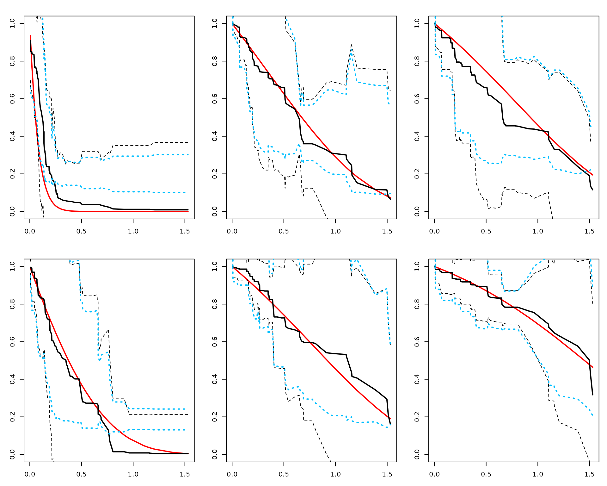
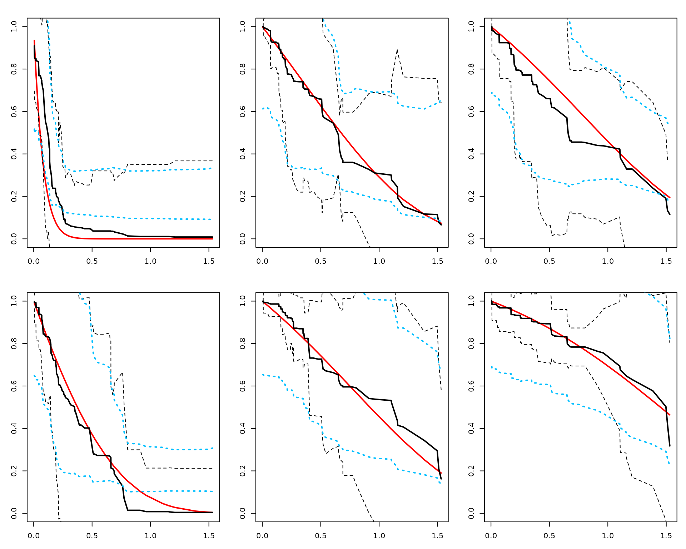

Confidence Interval and Confidence Band - Survival Tutorial (RLT)
Ruoqing Zhu
Last Updated: May 17, 2026
Source:vignettes/articles/confidence-interval.Rmd
confidence-interval.RmdOverview
This page shows how to construct confidence bands for individual survival curves predicted by RLT.
Data
We simulate right-censored survival data with standard normal predictors.
# (Optional) For reproducibility in this tutorial only
set.seed(2)
# ---- Generate a small survival dataset (~120 obs) ----
n <- 120
p <- 10
X <- matrix(rnorm(n * p), n, p)
xlink <- function(x) exp(x[, 1] + x[, 3] / 2)
FT <- rexp(n, rate = xlink(X)) # event times
CT <- pmin(6, rexp(n, rate = 0.25)) # censoring times (cap at 6)
Y <- pmin(FT, CT) # observed time
Censor <- as.numeric(FT <= CT) # 1 = event observed
# A few test subjects to visualize (keep small for a clean figure)
ntest <- 6
testX <- matrix(rnorm(ntest * p), ntest, p)
# True survival for reference (only for simulated data)
timepoints <- sort(unique(Y[Censor == 1]))
SurvMat <- matrix(NA, nrow(testX), length(timepoints))
exprate <- xlink(testX)
for (j in seq_along(timepoints)) {
SurvMat[, j] <- 1 - pexp(timepoints[j], rate = exprate)
}Fit and predict with variance
# install.packages("devtools"); devtools::install_github("teazrq/RLT")
library(RLT)
fit <- RLT(
X, Y, Censor, model = "survival",
ntrees = 200, mtry = min(p, 10), nmin = 5,
split.gen = "random", nsplit = 3,
resample.prob = 0.8, resample.replace = FALSE,
importance = FALSE, verbose = FALSE,
ncores = 1,
var.mode = "matched",
param.control = list(split.rule = "logrank")
)
# Predict survival curves and covariance for test subjects
RLTPred <- predict(fit, testX, var.est = TRUE, ncores = 1)Option A — Naive Monte Carlo
This option computes bands using a Monte Carlo scheme with the covariance estimate. We also plot pointwise ±1.96 * sd from the diagonal of the covariance for reference.
alpha <- 0.05
logt <- log(1 + timepoints)
SurvBand_A <- get.surv.band(RLTPred, alpha = alpha, approach = "naive")
layout(matrix(1:ntest, nrow = 2, byrow = TRUE))
par(mar = c(3, 3, 2, 1))
for (i in 1:ntest) {
# truth (red) — only available here because data are simulated
plot(logt, SurvMat[i, ], type = "l", lwd = 2, col = "red",
xlab = "log(1 + time)", ylab = paste("Subject", i),
ylim = c(0, 1))
# estimated survival (black solid) and pointwise 1.96 bands (black dotted)
lines(logt, RLTPred$Survival[i, ], lwd = 2, col = "black")
lines(logt, RLTPred$Survival[i, ] - qnorm(1 - alpha/2) * sqrt(diag(RLTPred$Cov[,, i])),
lty = 2, col = "black")
lines(logt, RLTPred$Survival[i, ] + qnorm(1 - alpha/2) * sqrt(diag(RLTPred$Cov[,, i])),
lty = 2, col = "black")
# naive band (blue dotted)
lines(logt, as.numeric(SurvBand_A[[i]]$lower), lty = 3, lwd = 2, col = "deepskyblue")
lines(logt, as.numeric(SurvBand_A[[i]]$upper), lty = 3, lwd = 2, col = "deepskyblue")
}
Option B — Smoothed covariance
This option builds smoothed bands which can be more stable. Here we use a small rank for illustration.
alpha <- 0.05
logt <- log(1 + timepoints)
SurvBand_B <- get.surv.band(RLTPred, alpha = alpha, approach = "smoothed", k_rank = 5)
layout(matrix(1:ntest, nrow = 2, byrow = TRUE))
par(mar = c(3, 3, 2, 1))
for (i in 1:ntest) {
plot(logt, SurvMat[i, ], type = "l", lwd = 2, col = "red",
xlab = "log(1 + time)", ylab = paste("Subject", i),
ylim = c(0, 1))
lines(logt, RLTPred$Survival[i, ], lwd = 2, col = "black")
lines(logt, RLTPred$Survival[i, ] - qnorm(1 - alpha/2) * sqrt(diag(RLTPred$Cov[,, i])),
lty = 2, col = "black")
lines(logt, RLTPred$Survival[i, ] + qnorm(1 - alpha/2) * sqrt(diag(RLTPred$Cov[,, i])),
lty = 2, col = "black")
lines(logt, as.numeric(SurvBand_B[[i]]$lower), lty = 3, lwd = 2, col = "deepskyblue")
lines(logt, as.numeric(SurvBand_B[[i]]$upper), lty = 3, lwd = 2, col = "deepskyblue")
}
(Optional) Proportion-selected smoothing
For completeness, the smoothed approach can choose the rank by cumulative eigenvalue proportion:
SurvBand_C <- get.surv.band(
RLTPred, alpha = 0.05,
approach = "smoothed",
k_mode = "proportion",
k_prop = 0.95
)You can increase nsim for stability at the cost of
runtime.